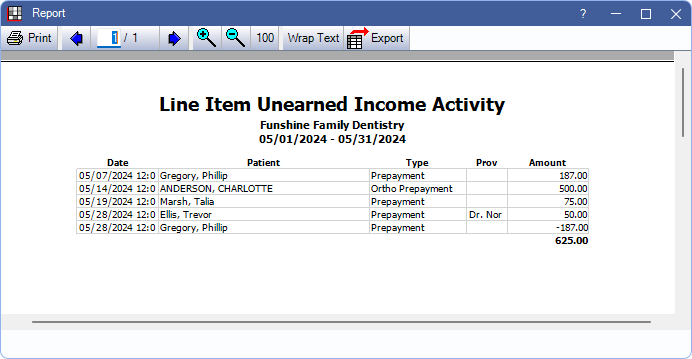

Line Item Unearned Income Report
The Line Item Unearned Income Report shows details for unearned payment splits in a date range.
In the Unearned Income Reports, click the Line Item Unearned Income tab.

Positive Unearned / Prepayment amounts on this report indicate either a collected unearned income (e.g., prepayment) or a patient payment transferred to unearned income, within the selected date range. Negative amounts indicate unearned has been allocated to a charge, has been refunded, or transferred to another source.
Filters
Set the report filters before running the report.
Calendars: In the left calendar select the start date. In the right calendar select the end date. The date range defaults to last calendar month.
Clinics: Only available when Clinics are enabled in Show Features. Select clinics to include in the report. Check All (includes hidden) to include all clinics, including those marked hidden.
- Filters by clinic attached to the Paysplit.
- If user is restricted to specific clinics, only accessible clinics are listed. When checking All (includes hidden), results include all clinics user has access to, including those marked hidden, and anything unassigned to a clinic; results do not include clinics user is restricted from.
Show provider column: Check to include the provider abbreviation of a the Provider assigned to unearned income.
Report Preview
Click OK to generate the report. The following is an example of the report and explanation of the report columns. For a description of toolbar buttons, see Complex Report System.
- Date: Payment date.
- Patient: Patient attached to Paysplit.
- Type: Unearned Type assigned to paysplit (see Definitions: PaySplit Unearned Types).
- Clinic: Clinic assigned to paysplit.
- Prov: Only appears if Show provider column is checkedProvider assigned to paysplit. This is blank if no provider is assigned to the unearned paysplit.
- Amount: Amount of the paysplit. This differs from the payment amount if the payment includes multiple paysplits.